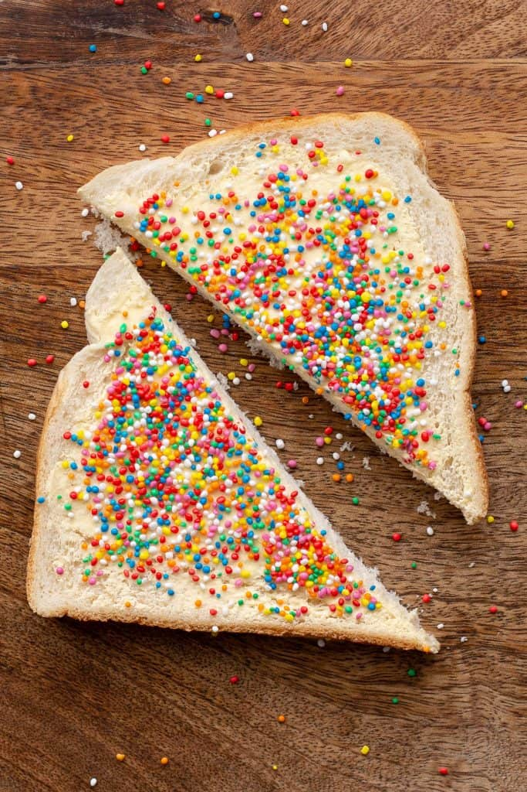

FAIRY BREAD

DESCRIPTION
An old fashion Australian snack made from just 3 ingredients - white bread, butter and lots and lots of sprinkles. One recipe you definitely can't mess up. Mostly eaten at a kid's birthday party but everyday's a party for Bogan Marie Antoinette.
INGREDIENTS
- white bread
- butter (salted or unsalted) / margarine
- 100s & 1000s / sprinkles
INSTRUCTIONS
- To make your own fairy breadm coat each slice of white bread with plenty of butter.
- Pour plenty of sprinkles / 100s anad 1000s over the top of each slice.
- Slice the bread into triangles and enjoy!
TIPS
- Crust On or Off - It's up to you.
- Start with (Slightly) Frozen Bread - This makes it much easier to spread butter or margarine over the bread as it won't rip apart. Make sure not to use bread straight from the freezer. Let it defrost slightly first.
- Play With Shapes - Cut the bread into cute shapes like triangles, circles or use a cookie cutter for hearts or stars.